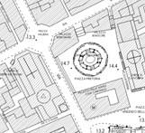

12131415161718
Stato Ispezione
Ispezionato OK
Stato di necessita
Lavori sospesi
Non ispezionato
 CartoDB Chiaro
CartoDB Chiaro

CTC 2k PalermoALLEGATO OBBLIGATORIO - PROTOCOLLO LIPU
-
-
1 - Anagrafica della pianta
ID Albero
-
Data
-
Specie
-
Ora controllo
-
Ubicazione
-
Altezza chioma [m]
-
Altezza complessiva [m]
-
Alt. base chioma [m]
-
Diametro tronco [m]
-
Area protezione chioma [m²]
-
2 - Dichiarazione operatore
Nidi strutturati, uova o piccoli (pulli) visibili
-
Richiami o pigolii percepibili dalla chioma o cavita
-
Andirivieni continuo di adulti con cibo nel becco
-
3 - Esito dell'esame
Note
Documentazione fotografica
Foto 1
Foto 2
Foto 3
Firme
Operatore
PIN Capocantiere
Firma Capocantiere